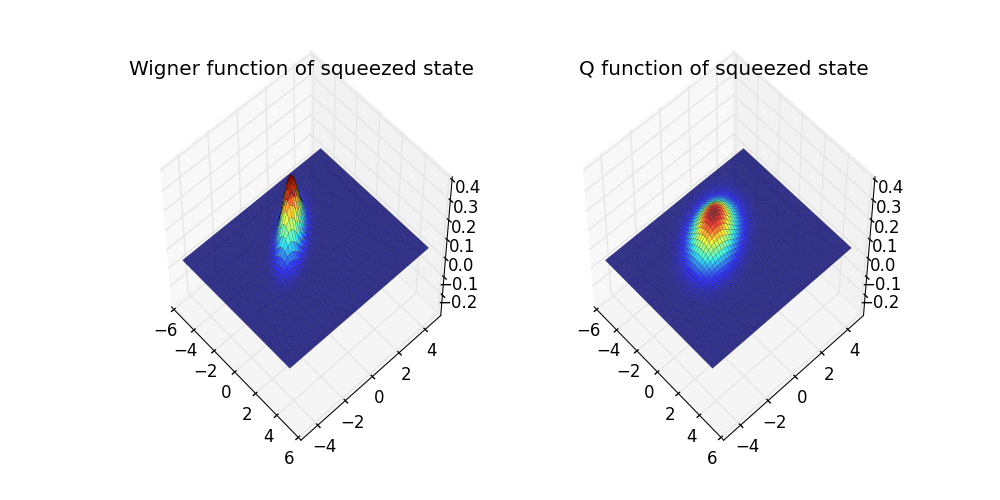

Wigner and Q-functions of a squeezed state¶
Demos the use of the displacement and squeezing operator in constructing a squeezed state.
from qutip import *
from mpl_toolkits.mplot3d import Axes3D
from matplotlib import cm
from pylab import *
#
# Define constants
#
N = 20
alpha = -1.0 # Coherent amplitude of field
epsilon = 0.5j# Squeezing parameter
#
# Define displacement and squeeze operators
#
a = destroy(N)
D = displace(N,alpha) # Displacement
S = squeez(N,epsilon) # Squeezing
psi = D*S*basis(N,0) # Apply to vacuum state
#
# Calculate Wigner function
#
xvec = linspace(-5,5,100)
X,Y = meshgrid(xvec, xvec)
W=wigner(psi,xvec,xvec)
#
# Calculate Q function
#
Q = qfunc(psi,xvec,xvec)
#
# Plot results
#
fig = plt.figure(figsize=(10, 5))
ax = fig.add_subplot(1, 2, 1, projection='3d',azim=-43,elev=52)
ax.plot_surface(X, Y, W, rstride=2, cstride=2, cmap=cm.jet, alpha=0.8,lw=.1)
ax.set_xlim3d(-6,6)
ax.set_xlim3d(-6,6)
ax.set_zlim3d(-0.3,0.4)
title('Wigner function of squeezed state')
ax2 = fig.add_subplot(1, 2, 2, projection='3d',azim=-43,elev=52)
ax2.plot_surface(X, Y, Q, rstride=2, cstride=2, cmap=cm.jet, alpha=0.8,lw=.1)
ax2.set_xlim3d(-6,6)
ax2.set_xlim3d(-6,6)
ax2.set_zlim3d(-0.3,0.4)
title('Q function of squeezed state')
savefig('examples-squeezed.png')
close(fig)
